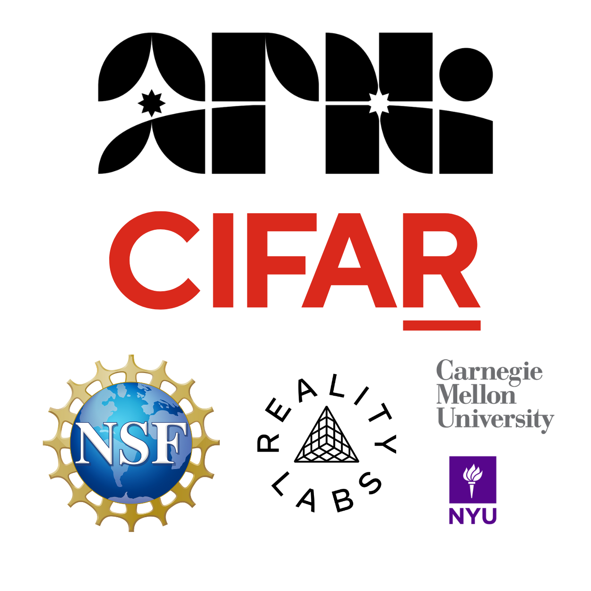

Introduction#
Welcome to the Neuromatch NeuroAI Course!

Orientation Video#
Please find below the Orientation Video for the NeuroAI course, delivered by the NeuroAI course director, Xaq Pitkow.
Orientation Video#
Concepts map#

Created by Patrick Mineault
Curriculum overview#
Welcome to the NeuroAI Course!
What are common principles of natural and artificial intelligence?
The core challenge of intelligence is generalization. Neuroscience, cognitive science, and AI are all questing for principles that help generalization. Major system features that affect generalization include: task structure (multitasking, multiple inputs with same output and vice versa), microcircuitry (nonlinearities, canonical motifs and their operations, sparsity), macrocircuitry or architecture (e.g. modules for memory, information segregation, weight sharing by input symmetry or common development), learning rules (synaptic plasticity, modulation), and data stream (e.g. curriculum).
We aim to present current understanding of how these issues arise in both natural and artificial intelligence, comparing how these system features affect representations, computations, and learning. We provide case studies and coding exercises that illustrate these issues in neuroscience, cognitive science and AI.
Learning Goal 1: A common understanding and vocabulary to describe challenges faced by naturally intelligent systems
Describe core shared concepts in neuroscience, cognitive science and machine learning and how they differ from each other
Describe and implement different ways in which an ANN can be compared to a BNN
Describe multiple scales of computation, and multiple scales of study (e.g. Marr’s levels, what/how/why?)
Learning Goal 2: Experience a multiplicity of approaches and interests at the intersection of neuro and AI; be able to describe some of these approaches and interests
Learning Goal 3: Be able to practically implement NeuroAI models
Coding and training models
Adding more features to existing models
Debugging (within guardrails)
Interpreting, analyzing and critiquing existing models
Learning Goal 4: Complete research that deals with difficulties in NeuroAI
Writing down a problem in a way that makes it tractable
Interacting with other people from other disciplines fruitfully
Do research (reading papers, implementing previous SOTA, coding new methods, evaluating diff methods) in NeuroAI
Communicating their research in ways that are comprehensible to their target audience

We hope you’re as excited to begin your journey into the world of NeuroAI!